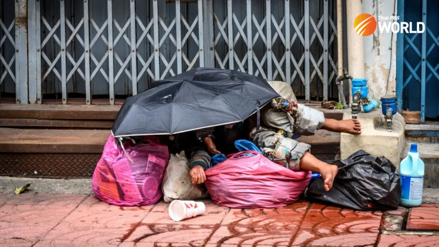
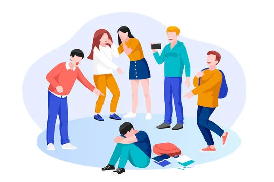
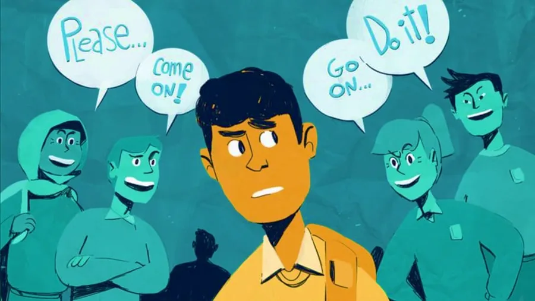
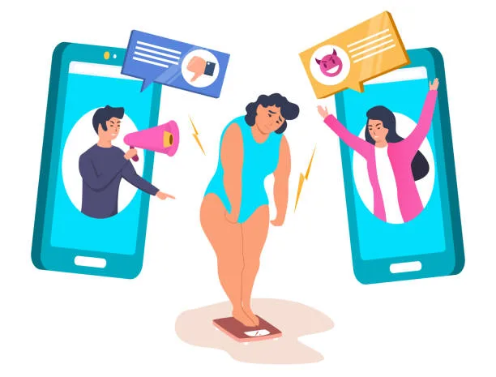
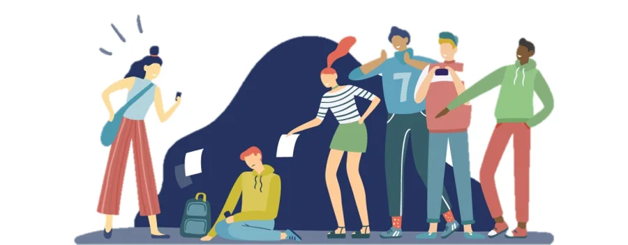
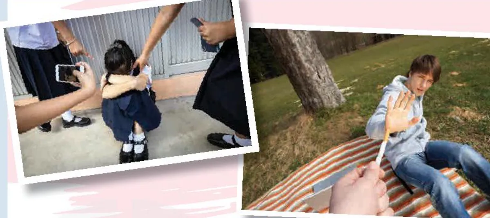
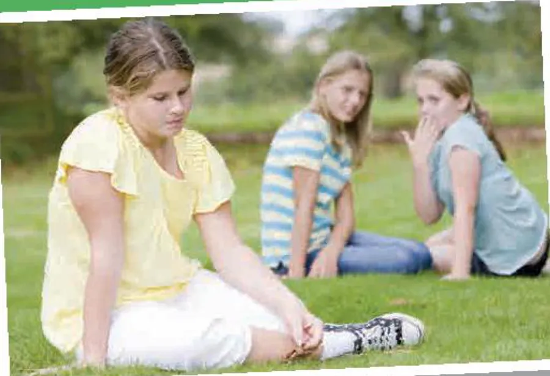

A social awareness club meeting
Lesson 1 — Getting started
9Five stops in 45 minutes
- 🔎
Warm-up
Spot the social issue
5 min - 🔤
Vocabulary
5 key words
7 min - 🎧
Listen and read
Mark, Mai and Nam · Tasks 1–4
20 min - 💬
Discussion
Issues that affect teens
10 min - ✅
Wrap-up
Exit ticket
3 min
Warm-up
Spot the social issue
5 minutesWhat social issue is it?




Vocabulary
Five key words
7 minutes
Listen and read
A social awareness club meeting
20 minutesWhat is happening?

1. Why is the boy saying no? He doesn’t want to smoke.
2. Why is the girl in school uniform hiding her face? She feels helpless and frightened.
3. What are the other people around her doing? taking photos and poking her
And this photo?

4. Why is the girl in casual clothes looking sad? Her friends are talking behind her back.
5. Is this behaviour acceptable? No, it’s bullying.
A social awareness club meeting
Mark: Hi, everyone. Last time our club met, we decided to start an awareness campaign to draw attention to a pressing social issue. So have you thought about any issues that we could focus on?
Mai: Yes, I think we should promote issues that affect a lot of people in our city, such as crime and overpopulation.
A social awareness club meeting
Nam: I like your ideas, Mai, but I think we should plan our campaign around social issues that directly affect teenagers like us.
Mark: Can you give us some examples?
Nam: Well, bullying, peer pressure, and body shaming, for instance, are major problems among teenagers today although many people don’t feel comfortable talking about them.
A social awareness club meeting
Mai: I agree with you. Hmm… so Mark, what do you think? Should we focus our campaign on a general social issue or one affecting mainly teens?
Mark: Hmm. I think this time we should focus on a problem teens struggle with every day because this won’t be a big campaign. However, we’ll try to use your ideas for another project, Mai.
A social awareness club meeting
Mai: Sounds good! Now let’s decide on a social issue. Is the top problem facing teens today peer pressure, body shaming, or bullying?
Nam: I think it’s bullying because it’s very common today, and …
Who suggests it?
1. Issues that have an effect on many people in the city Mai — “issues that affect a lot of people in our city”
2. Problems that have a direct impact on teens Nam — “social issues that directly affect teenagers”
3. An issue that teens face in their everyday life Mark — “a problem teens struggle with every day”
Five social issues
1. crime crime
2. o________ overpopulation
3. b________ bullying
4. p________ p________ peer pressure
5. b________ s________ body shaming
Summary
Nam believes that there are major teen problems today (1) ________ although many people don’t feel comfortable talking about them. Mai agrees with him. Mark thinks they should focus on a problem teens struggle with every day. (2) ________ However, they’ll try to use Mai’s ideas for another project. Finally, Nam suggests focusing their campaign on bullying (3) ________ because this issue is very common among teenagers these days.
Discussion
Issues that affect teenagers
10 minutesCan you think of other social issues that directly affect teenagers?
❓ What can we do to stop them or help the victims?
🗣️ I think … is a serious problem because … · We should … to …
📣 Share your group’s ideas with the class.
Before you leave…
1. Name three social issues that affect teenagers. bullying · peer pressure · body shaming
2. What is peer pressure? influence from people of the same age to behave like them
3. Complete: We should start a campaign to raise ______ of bullying. awareness
Homework
1. Do the Getting started exercises in the workbook.
2. Find one example of a social issue in the news and note it down.
3. Prepare for Lesson 2 — Language: choice questions, linking words.